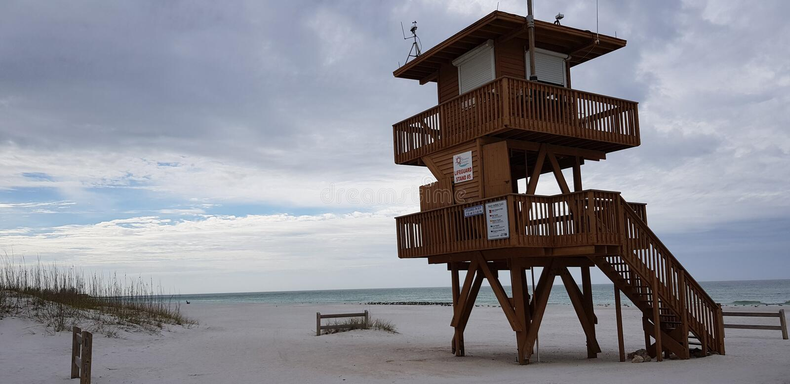
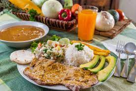

Infórmate y Participa
Día de Playa Min Juvenil
Domingo 22 de Mayo
Playa: Coquina Beach en Ana María IslanMás información: Fernando Cepero
Todos son bienvenidos 

Recibiremos Nuevos Hermanos
Sábado 21 de MayoTraslados, profesión de fe, bautizos
Si te decides a ser bautizado:
Comunícate con el Pastor
Reynaldo Ojeda (407) 310--0690)
Bautismo
1. Magalie Luceus.2. Añade tu nombre.
Profesión de Fe
1. Juan Carlos Martínez.2. Daymí Mojena.
3. Maikel Ramírez.
4. Isabel María Marín.
5. Mirta Linton.
Proceso de Traslado
Esperando respuesta
1. José Daniel Valdivia2. Manuel García
3. Alberto Contreras
4. Cesarina Contreras
5. Dania Sepúlveda
Nota
Para ser aceptado como miembro de nuestra Iglesia, sea por Traslado, Profesión de Fe ó Bautismo, acercate a:SECRETARIA DE IGLESIA
Elsy Jorge
PASTOR DE LA IGLESIA
Reynaldo Ojeda
Será un gran placer asistirte
Tarde de Temas Juveniles
Hablemos sobre asuntos actuales
Ataque contra la identidad
Ataque contra la familia
Ataque contra la vida
Origen y propósito
Día de Celebración Juvenil
Predicador Joven InvitadoCarlos Antonio Alejandro
Sábado 4 de Junio
Congreso Mundial Adventista
Sólo para DelegadosJunio 6 al 11 / 2022

Mes Festejando los Padres
Todo el mes de JunioCelebrándolo en grande
Sábado 18 de Junio
Programación dedicada a los padres
No te la pierdas
Culto de Adoración
Almuerzo dedicado a los Padres
Escuela Sabática AuspiciaSábado 18 de Junio
Lista Cumpleaños Mayo
2. Camila Patiño - Mayo 7
3. Moisés Sánchez - Mayo 7
4. Jonathan Morales - Mayo 8
5. Maida Sánchez - Mayo 8
6. Denis Leyva - Mayo 10
7. Nestor Patiño - Mayo 12
8. Eduardo Ceiro Sr - Mayo 13
9. Daymi Mojena - Mayo 13
10. Rolando Camacho - Mayo 14
11. Norma Beatriz - Mayo 16
13. Jaime Valdivia - Mayo 17
14. Teresa García - Mayo 20
15. Jelenys Martínez - Mayo 22
16. Moisés Rodríguez - Mayo 23
17. Ramón Cruz - Mayo 27
18. María L Ferreira - Mayo 29
19. Nelson Román - Mayo 29
20. Katherine Gratereaux - Mayo 29
21. Cesarina Contreras - Mayo 30
Lista Cumpleaños Junio
2. Martha C Lewis - Junio 4
3. Marcelo Silva - Junio 4
4. Norma Manchón - Junio 6
5. Margarita Suárez - Junio 10
6. Marco Castellano - Junio 12
7. José A Moreno - Junio 13
8. Bismar Sánchez - Junio 15
9. Carlos L Gómez - Junio 16
10. Yris M Gómez - Junio 16
12. Luís R Iglesias - Junio 21
13. Olga Lajara - Junio 22
14. Ediltrudis Sotelo -Junio 23
15. Amaury Viera - Junio 26
16. Reynaldo Ojeda - Junio 27
17. Jimmy González - Junio 28
18. Rafael Reyes - Junio 28
19. Martha Fuentes - Junio 30
20. Irma Velásquez - Junio 30
Evento Ministerios Hispanos
Julio 4 / 2022 en Orlando
Es un evento espiritual-social-deportivo. Las iglesias podrán registrar sus equipos deportivos y cantidad de asistentes. El hospedaje estará a cargo de cada grupo de forma individual. La iglesia de Sheeler Oaks en Orlando ofrece hospedaje gratis.
Mantente Informado
Involúcrate en Todo

Departamento Comunicaciones
Directoras: Alíah Beltré
y Kelin Leyva
Nuestra meta
Conocer a Jesús y compartirlo
Aprender de él e imitarlo
Hasta que él venga
Nuestra otra Iglesia
Emmanuel Clearwater Spanish
2855 Haines Bayshore Rd
Clearwater Fl 33760